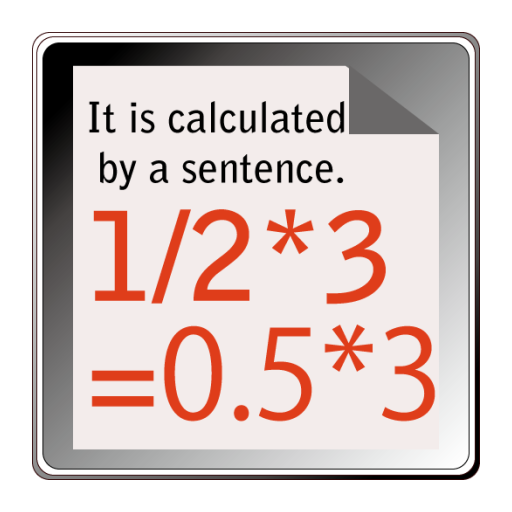
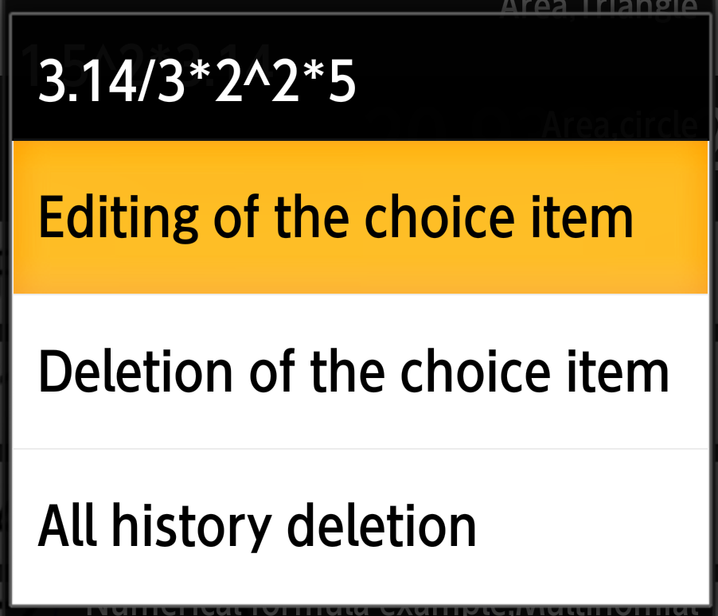

|  |
Arithmetic Calculator
Moji Cal[Moji Karu] |
This applicationIt is an electronic calculator letting I write in a numerical formula by a letter and calculate.Because it is "Text to Calculation", how is the reading of in "Moji Kalu" Place present as for the possible calculation,
"Arithmetic + "product of the primary schoolchild" for public." I trace it to answer it that I write in a numerical formula
and fill in "= " including a calculation process and wear it and begin to write in bears. |
|
Good point
Because both the number and the operator are just left |
|
|
|
A database records the numerical formula that I calculated |
|
|
|
|
There is a field of " name " to touch to " classification " to distribute it, and to perform a classification for this database
and for each several sets. As for the classification, a stamp is in the thyme of the date and time when " history ", the name were registered at the stage when I registered.
|

I can edit a classification and the name. After (Ver1.4)
|
Common text to put it anywhere, and to put |
|
|
|
Other laborers |
|
|
|
How to use
| 1 | Soft Key | |||||||||||||||||||||||||||||||||||||||||||||||||||
|
||||||||||||||||||||||||||||||||||||||||||||||||||||
| 2 | Change of the input method | |||||||||||||||||||||||||||||||||||||||||||||||||||
I incorporated a keyboard from Ver1.1.
Because the cases that a keyboard of the input method was displayed appeared by a model without intending, I switched from EditText. Attention;Because I do not seem to be able to implement the cursor flashing on and off between a letter and a letter
I display choice part deletion and a supporting dialogue of the paste by a numerical formula input area push and hold.
|
||||||||||||||||||||||||||||||||||||||||||||||||||||


| 3 | Other instructions |
|
Test terminal
Android5.1.1 ； 501SO(Xpelia Z5)
Android4.4.2；304SH
Android4.2.2；SH-08E (7-inch tablet)
Android4.1.2；203SH
Android4.0.3；is15SH(It is with a dial key)
Android5.1.1 ； 501SO(Xpelia Z5)
Android4.4.2；304SH
Android4.2.2；SH-08E (7-inch tablet)
Android4.1.2；203SH
Android4.0.3；is15SH(It is with a dial key)
Release record
- On 1.4.1, May 8, 2016, Android 5.1 correspondence
- It supports additional functions such as ToolBar
- I incorporated menu mechanism in the lower right in one (an input area becomes small) of that a title part interfered when I incorporated it in the upper part.
- Revision of the help mechanism
- I integrate it with the help page of web for the purpose of preventing prevention of the modified disagreement and enlargement of the application size
- It supports additional functions such as ToolBar
- 1.4.0 ; November 3, 2015；
- IF addition to name a numerical formula a classification by the database compilation of numerical formula that I input
*A newline button cannot finish putting it out with a softkey board of the name input, but removes it by a revision program even if I input a newline sign. - I paste the answer to calculation in front or add IF supporting selection area deletion
- "((-2)) Repair of the bug that "(" such as " is left and is terminated abnormally
*It is not revised about the input error that the number of ")" seems to be different from (" in (because I cannot deal by a program, please forgive it)
- IF addition to name a numerical formula a classification by the database compilation of numerical formula that I input
- 1.3.0 ; October 12, 2015；
- Database compilation of numerical formula that I input (list of numerical formulas that I input)
1)I record a numerical formula for a database when I let I input "=" and calculate
2)I display a list dialogue by the push and hold of the "Re" button
3)I push and hold the list item for a few seconds and remove all removal / histories
4)The calculation example is displayed by sample degree, too - I stop DB function making to give priority to the following bug corrections
1)Because there is the model which a softkey board interferes and cannot operate, I change it (I left a copy function) in TextView for exclusive use of the indication from EditText
2)Three columns of end signs of the calculation with the rest
3)Cancellation of significant digits measures of several copies of small
- Database compilation of numerical formula that I input (list of numerical formulas that I input)
- 1.1.1 ; On September 28, 2015,
- Decimal calculation correction
- 1.1.0 ; On September 20, 2015,
- I am equipped with a keyboard with the goal of improvement (the operability that I say, or is proper) of the convenience
- Internal structure reexamines correspondence as more than Android3.0
- I examine special terminal (AQUOS K) without touch panel during September when I can borrow a terminal and continue
Because I cannot display the cursor, I am examining a method
- On December 14, 2013, The first release
- There is no keyboard first. I just use the key to input method
- Operator chooses it among a spinner. I start with という specifications
Android4.1.2 ； 203SH
Android4.0.3 ； is15SH
Android2.3.3 ； 007SH